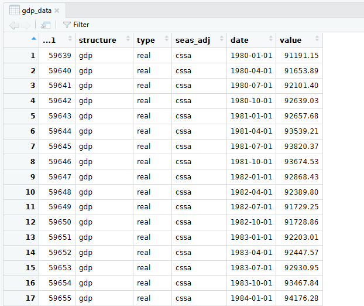
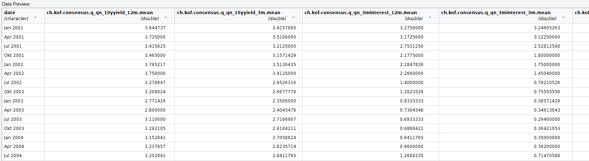
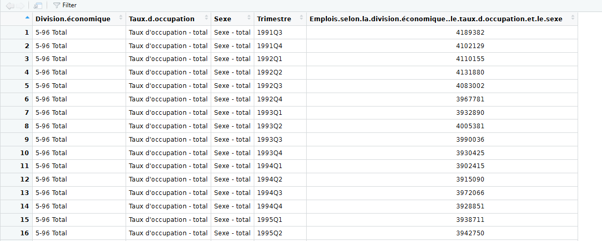
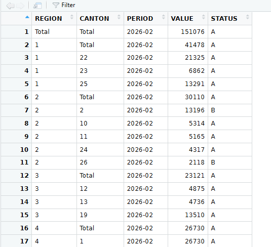
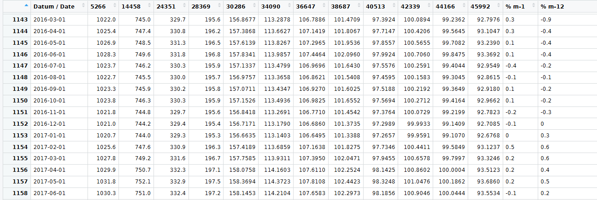
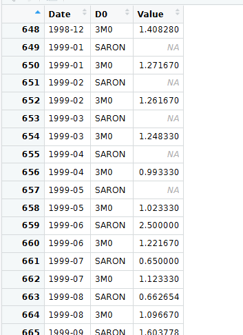
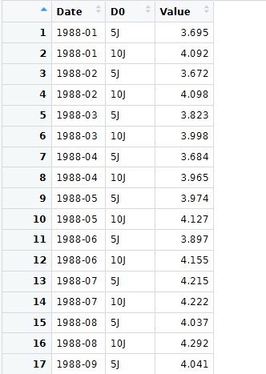
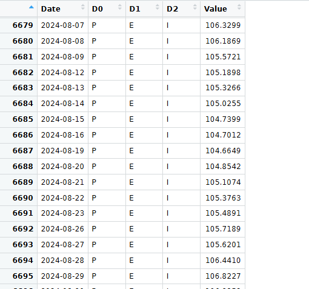

This file documents all data sources and the structure of the data as of the current version. This is currently a work in progress.
The GDP Data is downloaded from SECO under the following link: “https://www.seco.admin.ch/dam/seco/de/dokumente/Wirtschaft/Wirtschaftslage/BIP_Daten/ch_seco_gdp_csv.csv.download.csv/ch_seco_gdp.csv” and saved as gdp.csv
It contains a CSV Data with the following Column Names: "...1" "structure" "type" "seas_adj" "date" "value"
The script 01_load_data.R downloads the data from the link and saves it. Then the script 02_format_data.R selects the observations we need.
structure = gdp Select full GDP and not a subsettype = real Real GDPseas_adj = cssa Calendar, seasonally and sport event adjustedThe dataframe then looks like this:

Then the data is already adjusted, but needs to be detrended, which is done in scripts 03_transform_data.R. This is done via the HP Filter and the neverhpfillter package. Further lags for t-1 and t-2 are created to prepare the final data.
The SPF Data is downloaded via the kofdata Package using the get_collection() function. More information on the data can be found here: https://kof.ethz.ch/en/surveys/experts-surveys/kof-consensus-forecast.html, including download and methodology.
The Dataframe is then saved as kof_master.csv. It inclodes all consensus forecast mean values. From it we select:
ch.kof.consensus.q_qn_unemp_5y.mean -> The mean forecast of unemployment in 5 yearsch.kof.consensus.q_qn_prices_5y.mean -> The mean forecast of yearly CPI increase in 5 yearsch.kof.consensus.q_qn_3minterest_3m.mean-> The three month mean interest rate forecast of SARONch.kof.consensus.q_qn_3minterest_12m.mea -> The 12 month mean interest rate forecastdate-> the date column from the quarter the forecast was taken from.The Unemployment forecast is not seasonally adjusted. This is how the master looks:

The Employment Data is downloaded via the BFS Package as well, using the bfs_get_data() function with id: px-x-0602000000_101.
The data looks like this:

Then we filter for - Division.économique= 5-96 Total(NOGA codes 5 to 96, which exclude sectors like agriculture) - Taux.d.occupation = Equivalents plein temps, désaisonnalisé(Full time equivalent, seas adj.) - Sexe = Sexe - total (All genders)
Excluding farm workers is the usual approach with (un) employment data as it’s hard to accurately measure these sectors and the work is highly cyclical. We also filter for Full time equivalent and all genders.
The unemployment is from the Swiss Federal Office of Statistics (BFS). It’s downloaded via the BFSPackage using bfs_download_asset() and saved as cpi_series.xlsx
The data looks like this:

Then we select the data for REGION= TOTAL as this is the whole of Switzerland.
Finally we calculate the unemployment rate by dividing unemployment by (unemployment + employment).
The CPI Data is from the Swiss Federal Office of Statistics (BFS) with ID: 36483229. It’s downloaded via the BFSPackage using bfs_download_asset() and saved as ___.csv
The data looks like this:

Then we select the data for column 38687 as it is indexed in 2015. In theory the index columns are interchangable.
Downloaded via the Swiss National Bank (SNB) API. More info available here: https://data.snb.ch/en
First The function download_snb_data() calls the API using a specific URL. The Url accesses a data storage cube on the site such as this: https://data.snb.ch/en/topics/ziredev/cube/zimoma.
If you visit a table online you will find an Info button for AI handling.
Apart from the Cube you select the dimensions, D0, D1, D2. You may not need all of them. Here the datacube is zimoma (Money Market Rates). We select 3M0 (LIBOR) and SARON from the D0 dimension. We also specify the timeframe where we want the data via from_date and to_date.
The API call Downloads two datafiles a CSV with the actual data and the metadate as JSON file.
The data looks like this:

The SARON and LIBOR was discontinued in January of 2022 while SARON calculations only exist since June of 1999.
Downloaded via the Swiss National Bank (SNB) API. More info available here: https://data.snb.ch/en
First The function download_snb_data() calls the API using a specific URL. The Url accesses a data storage cube on the site such as this: https://data.snb.ch/de/topics/ziredev/cube/rendoblim.
If you visit a table online you will find an Info button for AI handling.
Apart from the Cube you select the dimensions, D0, D1, D2. You may not need all of them. Here the datacube is rendoblim (Renditen von Obligationen). We select 5J (5 years) and 10J (10 years) from the D0 dimension. We also specify the timeframe where we want the data via from_date and to_date.
The API call Downloads two datafiles a CSV with the actual data and the metadate as JSON file.
The data looks like this:

Downloaded via the Swiss National Bank (SNB) API. More info available here: https://data.snb.ch/en
First The function download_snb_data() calls the API using a specific URL. The Url accesses a data storage cube on the site such as this: https://data.snb.ch/en/topics/ziredev/cube/devwkieffid.
If you visit a table online you will find an Info button for AI handling.
Apart from the Cube you select the dimensions, D0, D1, D2. You may not need all of them. Here the datacube is devwkieffid (Effective exchange rate indices ). We select the following from the dimensions - D0 = P (Real & PPI Based) - D1 = E (Euro Area) - D2 = I (Index)
We also specify the timeframe where we want the data via from_date and to_date.
The API call Downloads two datafiles a CSV with the actual data and the metadata as JSON file.
The data looks like this:

As the Data is daily, we summarize by monthy by sleecting the last value of every month.